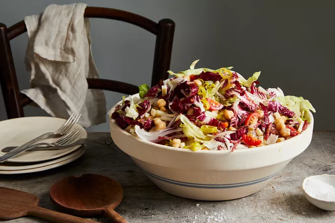

Nancy's Chopped Salad

Author Notes
What makes us keep coming back to this now-iconic salad from Chef Nancy Silverton of Pizzeria Mozza in L.A.? Its
powerhouse dressing? Its versatility? Yes and yes—plus a few buried tricks. Salting the tomatoes ahead to make
them taste riper and more tomatoey. Soaking the onion in ice water to wash away the funky aftertaste. Finishing
the salad not only with salt to taste but also lemon juice. But maybe most memorably, making an oregano
vinaigrette with this much dried oregano. It's not a mistake. Silverton advises, with this much oregano, to be
sure to buy the good stuff from Penzey's or another store that specializes in dried herbs. Recipe adapted
slightly from The Mozza Cookbook (Knopf, 2011) and The Washington Post. —Genius Recipes.
Ingredients
For the vinaigrette
- 2 1/2 tablespoons red wine vinegar
- 2 tablespoons dried oregano
- Freshly squeezed juice from 1/2 lemon (1 tablespoon), or more to taste
- 2 medium cloves garlic, 1 smashed flat and 1 grated
- 1/2 teaspoon kosher salt, plus more to taste
- 1/4 teaspoon freshly ground black pepper, plus more to taste
- 1 1/2 cups extra-virgin olive oil
For the salad
- 1/2 small red onion, cut in half from top to bottom
- 1 head (22 ounces) iceberg lettuce
- 1 head (11 ounces) radicchio
- 1 pint small, sweet cherry tomatoes, such as Sun Golds or Sweet 100s, cut into quarters
- Kosher salt
- 1 1/2 cups no-salt-added chickpeas, drained
- 1/4 pound aged provolone, cut into 1/8-inch-thick slices, then cut into 1/4-inch-wide strips
- 1/4 pound Genoa salami, cut into 1/8-inch-thick slices, then cut into 1/4-inch-wide strips
- 5 pepperoncini (stems discarded), cut into thin slices (about 1/4 cup)
- Freshly squeezed juice from 1/2 lemon (1 tablespoon), or more to taste
- Dried oregano (preferably Sicilian oregano on the branch), for sprinkling
Directions
For the vinaigrette
- Whisk together the vinegar, oregano, lemon juice, the smashed garlic and grated garlic and the salt and
pepper in a medium bowl. Let the mixture rest for 5 minutes (to marinate the oregano). Add the oil in a
slow, steady stream, whisking constantly to form an emulsified vinaigrette. Taste for seasoning, and add
salt or lemon juice as needed. The yield is a generous 1 1/2 cups; you'll use up to 1/2 cup for this salad,
and the remainder can be refrigerated for another use (up to 3 days).
For the salad
- Separate the layers of the onion and stack two or three layers on top of one another, then cut them
lengthwise into 1/16-inch-wide strips. Repeat with the remaining onion layers. Place the onion in a small
bowl of ice water to sit while you prepare the rest of the ingredients. Drain the onion and pat dry with
paper towels before adding to the salad.
- Cut the iceberg lettuce in half through the core. Remove and discard the outer leaves, and discard the core.
Separate the lettuce leaves, stack two or three leaves on top of one another, then cut them lengthwise into
1/4-inch-wide strips. Repeat with the remaining leaves; thinly slice the radicchio in the same way. Cut the
tomatoes in half, season them with salt to taste, and toss gently.
- Combine the lettuce, radicchio, tomatoes, chickpeas, provolone, salami, peperoncini and onion in a large,
wide bowl. Season with salt to taste, and toss to thoroughly combine. Drizzle 6 tablespoons of the
vinaigrette over the salad, then sprinkle with the lemon juice; toss gently to coat the salad evenly. Taste,
and add the remaining 2 tablespoons of the vinaigrette, plus salt and/or lemon juice as needed.
- Transfer the salad to a large platter or divide it among individual plates, piling it like a mountain.
Sprinkle the dried oregano leaves on top and serve.